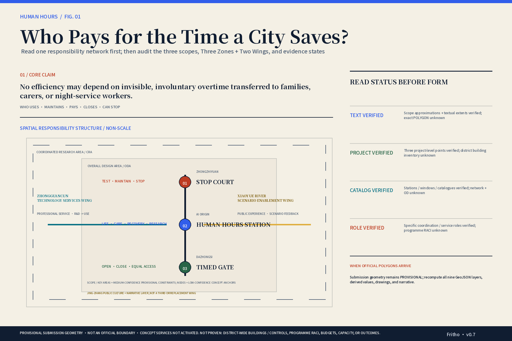
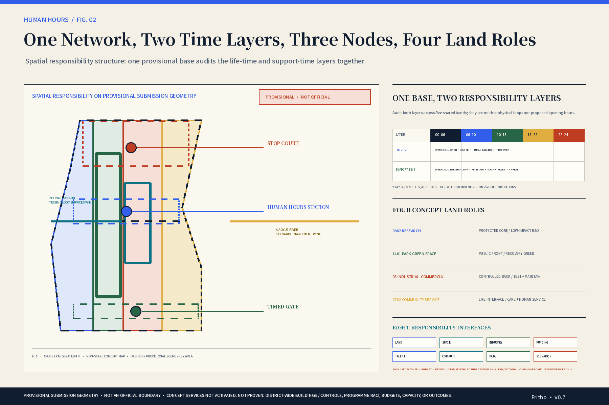
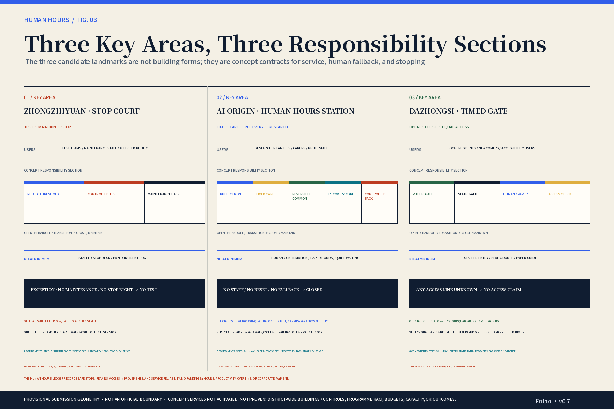
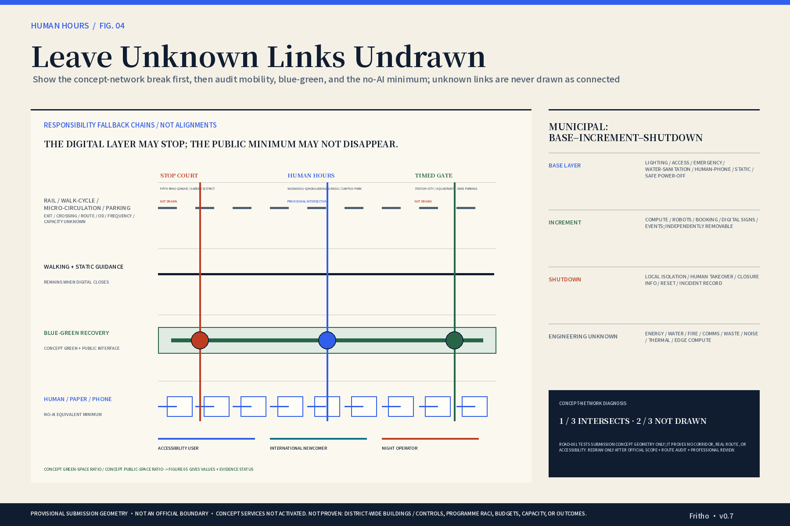
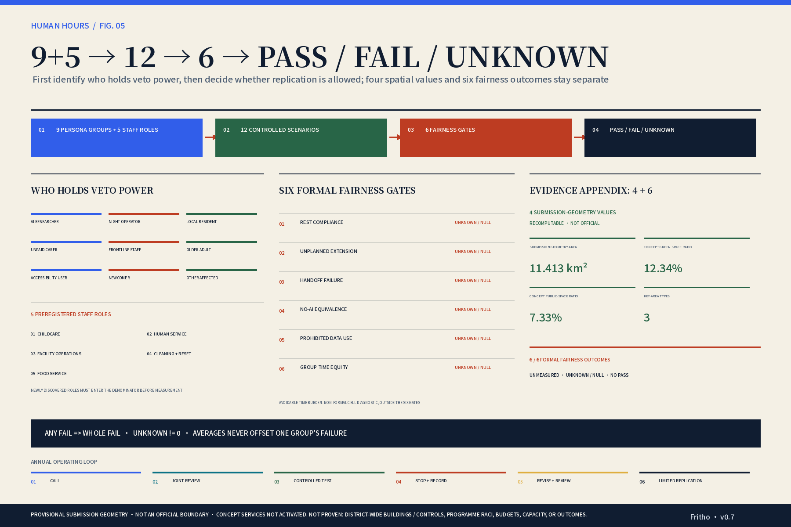

01 / CORE CLAIM
Who ultimately pays for the time a city saves?
No efficiency may depend on invisible, involuntary overtime transferred to family members, carers, or night-service workers.
Every spatial or AI service must name who uses, maintains, pays, when it closes, and who can stop it when it fails.
02 / OFFICIAL 3×5 CONTRACT
Three positionings are not backdrop. Five functions are not slogans.
Each function receives one primary spatial bearer. Other layers may support but cannot claim the same mandate. Official terms remain intact; the proposal adds responsibility, stopping, and evidence boundaries.
Full-stack independent AI innovationWorld-class AI innovation ecosystemAI+ scenario empowermentIntelligent AI vibrant cityGlobal voice in AI governance
CENTENNIAL JING-ZHANG CULTURAL BELT
GLOBAL VOICE IN AI GOVERNANCE
Stop Court + public audit + Human Hours LedgerURBAN AI LIFE EXPERIENCE BELT
AI+ SCENARIO EMPOWERMENT · INTELLIGENT AI VIBRANT CITY
Dazhongsi + Xiaoyue River Scenario Enablement Wing + public space across 3 zonesAI FUSION INNOVATION BELT
FULL-STACK INDEPENDENT AI INNOVATION · WORLD-CLASS AI ECOSYSTEM
Zhongzhiyuan / AI Origin + Zhongguancun Technology Services WingThree zones carry primary duties · two wings provide interfaces · Jing-Zhang culture carries the narrative. Owners, resources, budgets, capacity, and partnerships still require verification.
03 / THREE DESIGN MOVES
Not more AI. A new allocation of responsibility.
The moves form one causal chain: identify responsibility, write time into space, then keep the service valid when technology fails.
01
Rewrite form as responsibility
Three Zones + Two Wings name service, maintenance, payment, stop, and recomputation duties—not five districts awaiting tenants.
Result: an accountable responsibility network02
Audit both responsibility layers by time
Five bands audit the life-time and support-time layers together. Space may change, but care and recovery cores may not be displaced and identities never exchange.
Result: a Human Hours Station auditable by time band03
Design failure before intelligence
When AI closes, human, paper, phone, static, and accessible alternatives still complete the basic task.
Result: access that survives a broken link
04 / SIX CASES × EIGHT ELEMENTSDo not copy cases. Move mechanisms into space.Six global cases provide bounded mechanisms only. Eight elements expose owner, budget, review, stop, and exit before candidate interfaces support regional coordination.FULL AUDIT · OPEN 6 CASES · 8 ELEMENTS · 5 REGIONAL INTERFACES
6 CASE TRANSLATIONS
8 RESPONSIBILITY ELEMENTS
FIVE REGIONAL CANDIDATE INTERFACES
- Zhongguancun AI North Latitude CommunityTalent–university–incubation service
- Future Science CityResult–problem–professional translation
- Huairou Science CityControlled facility access + translation
- Beijing E-TownRobotics manufacturing validation
- Jing-Jin-JiScenario demand + limited replication
Exchange problem briefs, de-identified evidence, review results, and replication conditions only. No partnership, resource, route, fee, capacity, or authorisation is proven.
05 / TWO LIVES, ONE DAY
One city. Two radically different time bills.
Five shared time bands do not require everyone to remain online. Each cell asks who gains convenience, who hands off, and who can recover.
TIME / PERSON
00–06 Late night
06–10 Morning
10–18 Day
18–22 Evening
22–24 Night
AI RESEARCHER
CO-PARENTING
REST
NO ALWAYS-ON
CARE HANDOFF
HUMAN CONFIRMS
RESEARCH
QUIET SEAT REMAINS
PICKUP / MEAL
NO RESET SQUEEZE
RECOVER / CLOSE
NO 24/7 OFFICE
NIGHT OPERATOR
DAYTIME CARE
PLANNED MAINT.
STOP ALLOWED
PAID HANDOFF
OFFLINE RETURN
RECOVERY FIRST
NO CARE TRANSFER
CARE HANDOFF
NO UNPAID EARLY START
CLOSE + RESET
ALL PAID TIME
AI RESEARCHER
CO-PARENTINGREST
NO ALWAYS-ON
NIGHT OPERATOR
DAYTIME CAREPLANNED MAINT.
STOP ALLOWED
AI RESEARCHER
CO-PARENTINGCARE HANDOFF
HUMAN CONFIRMS
NIGHT OPERATOR
DAYTIME CAREPAID HANDOFF
OFFLINE RETURN
AI RESEARCHER
CO-PARENTINGRESEARCH
QUIET SEAT REMAINS
NIGHT OPERATOR
DAYTIME CARERECOVERY FIRST
NO CARE TRANSFER
AI RESEARCHER
CO-PARENTINGPICKUP / MEAL
NO RESET SQUEEZE
NIGHT OPERATOR
DAYTIME CARECARE HANDOFF
NO UNPAID EARLY START
AI RESEARCHER
CO-PARENTINGRECOVER / CLOSE
NO 24/7 OFFICE
NIGHT OPERATOR
DAYTIME CARECLOSE + RESET
ALL PAID TIME
If one person's shorter wait comes from another's unpaid extension—the proposal fails.Both protagonists are composite stress-test personas, not real residents or interview subjects.
FOUR-QUESTION RESPONSIBILITY AUDIT
This does not invent routes for the protagonists. At opening, use, failure, and reopening, responsibility must land in visible spatial evidence.
Who commits to opening?
Service state, human access, closure reason, and shift responsibility
Who pays for waiting and detours?
Waiting/detour record, staff time, and equivalent no-AI path
Who retakes responsibility and can stop?
Static fallback, human takeover, physical stop, and appeal entry
Who signs off paid reset and reopening?
Paid clearance/maintenance, failure record, review, and reopening evidence
06 / TWELVE SCENARIOS × SIX COMPONENTS
Every scenario card is a stop contract.
A scenario shows more than a name: users and staff, no-AI minimum, budget bearer, minimum and prohibited data, human takeover, and stop condition.
One-time handoff token
- NO-AI MINIMUM
- Staff registration, paper token, and phone referral.
- BUDGET BEARER
- Qualified care and public-service roles fund handoff, cover, and referral.
- MINIMUM / PROHIBITED DATA
- one-time local booking · non-identifiable aggregate capacity / Employer identity; cross-site traces; family graph.
- HUMAN TAKEOVER
- On-site staff accept, pause, or refer; AI cannot override safety or licensing.
- STOP CONDITION
- Unpaid family waiting; unequal no-App path; employer access.
- METRICS
- handoff · no-AI · data
Timed-service board
- NO-AI MINIMUM
- Static timetable, paper detour map, and staffed notice.
- BUDGET BEARER
- Node operator funds status checking, paper updates, and explanation.
- MINIMUM / PROHIBITED DATA
- non-identifiable aggregate capacity / Visit traces; work badge; consumption profile; staff rating.
- HUMAN TAKEOVER
- Staff may override a wrong state and timestamp the correction.
- STOP CONDITION
- Online board implies 24/7 staff; no paper path; hidden closure.
- METRICS
- handoff · no-AI · equity
Robot safe-stop station
- NO-AI MINIMUM
- Physical emergency stop, human check, dual handoff, isolation.
- BUDGET BEARER
- Test sponsor, equipment owner, or insurer funds stop, repair, cover, and recovery.
- MINIMUM / PROHIBITED DATA
- isolated safety log / Response-speed ranking; auto-cancelled stop; public biometrics.
- HUMAN TAKEOVER
- Operator and safety lead each retain non-overridable stop authority.
- STOP CONDITION
- Model overrides stop; hidden failed test; extra personal standby.
- METRICS
- rest · extension · data
COMPLETE SCENARIO AUDITOPEN 9 SUPPORTING SCENARIO CONTRACTSA scenario shows more than a name: users and staff, no-AI minimum, budget bearer, minimum and prohibited data, human takeover, and stop condition.FULL FIELDS · CARD-BY-CARD REVIEW
Protected post-night recovery
- NO-AI MINIMUM
- Human rules, posted windows, and worker-declared protection.
- BUDGET BEARER
- Employer/test sponsor funds cover and recovery; facilities fund maintenance.
- MINIMUM / PROHIBITED DATA
- non-identifiable aggregate capacity / Sleep; family care; fatigue score; performance use.
- HUMAN TAKEOVER
- Worker and worker representative may freeze booking, demand cover, or close.
- STOP CONDITION
- Recovery becomes standby; fatigue scoring; care defaults back to worker.
- METRICS
- rest · extension · data
Multilingual service without one account
- NO-AI MINIMUM
- Multilingual paper, phone interpretation, and staffed desk.
- BUDGET BEARER
- Independent public-service role funds translation, checking, and staff time.
- MINIMUM / PROHIBITED DATA
- no required personal data / Passport images; unified identity; nationality profile.
- HUMAN TAKEOVER
- Staff review high-risk answers; users may bypass AI.
- STOP CONDITION
- Forced account; no human correction; extra night work.
- METRICS
- no-AI · equity · data
Paid mode-switch test
- NO-AI MINIMUM
- Two-person paper checklist, physical separation, and sign-off.
- BUDGET BEARER
- Event/test sponsor funds reset, cover, storage, and cancellation.
- MINIMUM / PROHIBITED DATA
- isolated safety log / Reset-speed ranking; cleaner scoring; public identity chain.
- HUMAN TAKEOVER
- Cleaning, service, or operations staff may refuse the switch and close.
- STOP CONDITION
- Unpaid switch; model overrides stop; public/backstage mixing.
- METRICS
- extension · rest · data
Night-return info without tracking
- NO-AI MINIMUM
- Static map, service phone, and on-site emergency contact.
- BUDGET BEARER
- Transport-information and node operators fund checking and updates.
- MINIMUM / PROHIBITED DATA
- non-identifiable aggregate capacity / Continuous location; face ID; personal risk score.
- HUMAN TAKEOVER
- Existing lawful human response handles emergencies; AI never replaces it.
- STOP CONDITION
- Stored route; safety becomes surveillance; unverifiable live claim.
- METRICS
- no-AI · data · time burden*
Accessibility chain-break test
- NO-AI MINIMUM
- Human inspection, physical journey test, and posted alternative.
- BUDGET BEARER
- Venue/event role funds accessibility review, fallback, and assistance.
- MINIMUM / PROHIBITED DATA
- isolated safety log / Disability dossier; face/gait ID; personal route retention.
- HUMAN TAKEOVER
- Accessibility representatives may veto opening or event layout.
- STOP CONDITION
- Model-only acceptance; no human help; failed path still shown open.
- METRICS
- equity · no-AI · handoff
Public hours without work badge
- NO-AI MINIMUM
- Human count, fixed public quota, and visible on-site rule.
- BUDGET BEARER
- Industry event and venue roles fund the public minimum and reset.
- MINIMUM / PROHIBITED DATA
- non-identifiable aggregate capacity / Work badge; consumption profile; membership; dwell trace.
- HUMAN TAKEOVER
- Community representatives and staff may stop overreach and restore access.
- STOP CONDITION
- Badge priority; long block booking; longer no-App wait.
- METRICS
- equity · no-AI · extension
Device / employment log separation
- NO-AI MINIMUM
- Human log reading, dual review, and local repair list.
- BUDGET BEARER
- Equipment owner and test sponsor fund separation, audit, and review.
- MINIMUM / PROHIBITED DATA
- isolated safety log / Employment performance; pay; shift penalty; care status.
- HUMAN TAKEOVER
- Operator may reject model advice; safety lead explains the decision.
- STOP CONDITION
- Log enters HR; personal ranking; access cannot be audited/deleted.
- METRICS
- data · extension
Time-transfer simulator
- NO-AI MINIMUM
- Tabletop drill, static detour map, and human closure list.
- BUDGET BEARER
- Three-zone operators and test sponsor fund modelling, review, and repair.
- MINIMUM / PROHIBITED DATA
- non-identifiable aggregate capacity / Worker IDs; payroll/shift history; location; cross-site routes.
- HUMAN TAKEOVER
- Local operators and affected representatives may veto burden transfer.
- STOP CONDITION
- Personal tracking; unpaid redeployment; average hides one group.
- METRICS
- handoff · time burden* · equity · data
Public audit of urban rhythms
- NO-AI MINIMUM
- Public ledger, community meeting, worker review, paper rhythm map.
- BUDGET BEARER
- Node operators and civic-governance role fund audit, participation, and correction.
- MINIMUM / PROHIBITED DATA
- non-identifiable aggregate capacity / Personal time ledger; productivity; ranking; care identity.
- HUMAN TAKEOVER
- Community, labour, care, and accessibility representatives may veto rankings.
- STOP CONDITION
- Ranking; model-filled unknowns; average hides group failure.
- METRICS
- rest · extension · handoff · time burden* · no-AI · data · equity
07 / THREE-ZONE PACKAGES + DELIVERY CHAIN
No fictional buildings. Professional responsibility stays visible.
Each key area starts as a conditional spatial sequence; utilities use a base–increment–shutdown topology; delivery compresses into three stoppable work packages.
AI ORIGIN · HUMAN HOURS STATION
OFFICIAL ISSUE: Wudaokou–Qinghuadongluxikou and campus–park slow mobility
Verify station edge > walking/cycling interface > human handoff > protected core > recovery
Verify exits, crossings, campus/park gates, ramps, lifts, parking, and ownership boundariesAny unknown remains a verification entry; unverifiable care licence, staffing, cover, or exit closes the incrementDAZHONGSI · TIMED GATE
OFFICIAL ISSUE: station–city integration, four-quadrant walking, bicycle parking
Verify four quadrants > distributed parking > arrival porch > hours board > public minimum
Verify exits, signals, ramps, lifts, quadrant continuity, parking, and human chainAny unknown withdraws the access claim; no engineering alignment or connection is assertedZHONGZHIYUAN · STOP COURT
OFFICIAL ISSUE: Fifth Ring–Qinghe interface and garden-style district
Qinghe observation edge > garden research walk > controlled test > physical stop > reset
Verify crossing conditions, waterfront/green ownership, flood safety, test boundary, and maintenance accessAny safety, paid-time, data, stop-right, or crossing failure means stop / no connectionFOUR GROUND-TRUTH STATES: VERIFIED IS NOT COMPLETE
Each record shows the public fact first and then what it still cannot prove. A local project record narrows an unknown; it never creates a district-wide layer or service commitment.
GROUND-TRUTH AUDITOPEN FOUR GROUND-TRUTH RECORDSEach record shows the public fact first and then what it still cannot prove. A local project record narrows an unknown; it never creates a district-wide layer or service commitment.TEXT · PROJECT POINT · CATALOGUE · SPECIFIC ROLE
- VERIFIED
- The official announcement publishes an approximately 43.6 km² study scope, an approximately 11.4 km² overall-design scope, an approximately 368.4 ha total for the three key areas, and textual extents.
- STILL UNKNOWN
- The public announcement page provides no downloadable exact polygon or cleared CAD/GIS/PDF; all three repository key-area polygons remain provisional approximations.
- DESIGN CONSEQUENCE
- Retain the current provisional geometry for composition and topology tests; do not move boundaries or publish statutory areas, and recompute everything when official polygons arrive.
- VERIFIED
- Three real project-level anchors are verified: five buildings and approximately 238,300 m² at Xuebei Park with completion filing; an approximately 17,000 m² AI Origin public-realm improvement plus procurement for the Origin Building Rong HUB; and 39,522.111 m² of land with 96,811.508 m² above-ground GFA at the Dazhongsi Bluehome parcels, including a 60 m height cap, 2.45 FAR, and at least 25% green ratio for the main parcel.
- STILL UNKNOWN
- These records do not provide district-wide existing-building footprints, ownership, structure, retain/renovate/demolish status, occupancy, current opening, or service capacity. Rong HUB remains a procurement record, and Xuebei Park's public operating state is unverified.
- DESIGN CONSEQUENCE
- Keep buildings.geojson empty. Treat the three records as project control points and field-verification entries, never as district-wide building design or existing capacity.
- VERIFIED
- Dazhongsi and Qinghe station pages, the Night 4 service window from 23:20 to 04:50 the following day, and Beijing's static bus and rail catalogues provide verification entries such as station names, lines, stop order, and station codes.
- STILL UNKNOWN
- The public catalogues lack project-ready exits, continuous walking/cycling networks, stop-level times and reliability, night safety, flows, OD, and recomputable journey minutes.
- DESIGN CONSEQUENCE
- Use stations and service windows only as field-verification entries. Keep the ROAD-001 diagnosis at one of three intersections and two NOT DRAWN gaps; add no inferred route or minutes.
- VERIFIED
- Public records identify Dazhongsi and Zhongzhiyuan renewal-coordination entries, AI Origin construction-procurement roles, and Beijing Dongsheng Agricultural, Industrial and Commercial Corporation as the operating unit of the AI Origin Community specialised-SME service station.
- STILL UNKNOWN
- These roles are not authorised operators for this proposal's care, human service, labour audit, data governance, accessibility review, stop/reset, or round-the-clock service. Budget, staffing, capacity, service windows, appeal, and exit remain unknown.
- DESIGN CONSEQUENCE
- The ecosystem may label verified specific roles, while programme RACI remains candidate/TBD. Every public-service increment stays inactive until actor, budget, staffing, and stop chains are complete.
SIX INTERFACE-EVIDENCE RECORDS: NO EVIDENCE, KEEP THE GAP
Every interface shows its spatial question, professional verification, do-not-draw condition, and redraw trigger. A role interface is not an institutional site; a concept line is not real accessibility.
ROAD-001: 1 / 3 provisional key areas intersect · 2 / 3 NOT DRAWN. This diagnoses submission concept geometry only; it proves no real route or accessibility.
NETWORK AUDITOPEN SIX INTERFACE-EVIDENCE RECORDSEvery interface shows its spatial question, professional verification, do-not-draw condition, and redraw trigger. A role interface is not an institutional site; a concept line is not real accessibility.SPATIAL QUESTION · DO-NOT-DRAW · REDRAW TRIGGER
AI Origin station-edge interface
Can exits, crossings, and the community frontstage form a continuous arrival chain that can also close honestly?
- VERIFY
- Joint field check of exit locations, crossings, ramps, lifts, surfaces, ownership, and service windows
- DISCIPLINES
- Mobility / accessibility / ownership / operations
- DO NOT DRAW
- If any required link is unknown, draw no interchange or accessible alignment
- REDRAW TRIGGER
- Official scope plus a cleared continuous-route record
AI Origin campus–park walking/cycling interface
Can campus/park gates, parking, and the protected core avoid transferring waiting to carers and staff?
- VERIFY
- Gate-opening rules, slow-mobility continuity, parking conflicts, lighting, and human fallback
- DISCIPLINES
- Urban design / mobility / operations / care
- DO NOT DRAW
- If opening rules or human fallback are unknown, draw no continuous path
- REDRAW TRIGGER
- Rules, route, and responsible party reviewed in one record
Dazhongsi station–city four-quadrant interface
Are four-quadrant walking, bicycle parking, and the public minimum continuous and equivalent?
- VERIFY
- Exits, signals, quadrant continuity, ramps, lifts, parking, fire safety, and the human-service chain
- DISCIPLINES
- Mobility / accessibility / fire safety / public service
- DO NOT DRAW
- ROAD-001 does not intersect; without a complete field chain, draw no connection
- REDRAW TRIGGER
- Official scope plus a quadrant-by-quadrant route audit
Zhongzhiyuan Fifth Ring–Qinghe interface
Can the crossing, waterfront safety, garden research walk, and maintenance access all work together?
- VERIFY
- Crossing condition, ownership, flood safety, ecology, maintenance access, test boundary, and night closure
- DISCIPLINES
- Mobility / water / landscape / safety / operations
- DO NOT DRAW
- ROAD-001 does not intersect; unknown crossing or flood safety means no connection
- REDRAW TRIGGER
- Official scope, professional base data, and joint safety review
Zhongguancun Technology Services Wing role interface
How can professional services enter the three zones without being misrepresented as contracted space or resources?
- VERIFY
- Initiator, operator, fee, service window, capacity, data duty, appeal, and exit
- DISCIPLINES
- Industry / policy / operations / data governance
- DO NOT DRAW
- Unknown actors or service terms permit a role interface only, never a partnership route or institutional site
- REDRAW TRIGGER
- A publicly verifiable actor–resource–responsibility record
Xiaoyue River Scenario Enablement Wing public interface
How can low-risk experience and scenario feedback retain a no-AI minimum and stop authority?
- VERIFY
- Site, operation, budget, representative review, human fallback, data boundary, and closure path
- DISCIPLINES
- Public space / community / operations / data governance
- DO NOT DRAW
- Without real RACI and a public minimum, draw no continuous service or capacity
- REDRAW TRIGGER
- Scenario contract and public-interest review both complete
PROFESSIONAL AUDITOPEN PROFESSIONAL VERIFICATION LAYEREach key area starts as a conditional spatial sequence; utilities use a base–increment–shutdown topology; delivery compresses into three stoppable work packages.MOBILITY · UTILITIES · WORK PACKAGES · ANNUAL OPERATION
FOUR-LAYER MOBILITY CONCEPT (VERIFICATION FRAME ONLY)
MUNICIPAL: BASE–INCREMENT–SHUTDOWN
THREE STOPPABLE WORK PACKAGES
Evidence base
Official geometry, buildings / ownership / controls, mobility–utility baseline, six-gate preregistration
Three-zone prototypes
Twelve scenarios, five industry tests, and six public-space component families
Annual operation + regional interfaces
Problem call, joint review, controlled test, stop record, revise, limited replication
CANDIDATE ANNUAL PROGRAMME–COMMUNITY–COMMUNICATION–CONVERSION MATRIX
HUMAN HOURS OPEN WEEKANNUAL
Public audit, unresolved disputes, and rotating experience at three landmarks
OPEN-SCENARIO CLINICQUARTERLY
Problem briefs, no-AI baseline drills, and controlled-test intake
DEVELOPER RESPONSIBILITY REVIEWMONTHLY / QUARTERLY CANDIDATE
Open component review, failure retrospective, and data-boundary check
THREE-LANDMARK MAINTENANCE DAYQUARTERLY CANDIDATE
Audit state posts, static paths, recovery, and stop/reopen surfaces
BILINGUAL EVIDENCE RELEASEAFTER EACH AUDIT
International communication publishes traceable evidence, unknowns, and replication terms only
ATTRACTION + CONVERSION GATEPER PROJECT
Problem brief > controlled test > six gates > limited replication / stop
All brands and cadences are candidates. Operator, venue, budget, participation scale, and dates remain TBD. No real RACI, budget, cover, insurance, data control, or representative review means no launch.
ACCEPTANCE AUDITOPEN METHOD–DRAWING–ACCEPTANCE CHAINSix planning methods each have one primary drawing and a falsifiable human-readable field. A change in official scope, scenario contract, metric, or schema triggers downstream redraw.6 METHODS · 6 FALSIFIABLE JUDGEMENTS
Three-level scope + official 3×5 contract
FIG-01 · A3-P02 · A3-P03 · A0-BOARD-1
Three working depths, Three Zones + Two Wings, three positionings, and five functions are findable within ten seconds, with no third-wing or statutory-redline implication.Two-time network + four concept land roles
FIG-02 · A3-P05 · A0-BOARD-1
Life-time and support-time layers, four land roles, and 0802/1401/05/0702 mappings are legible as a concept-role overlay only.Three conditional key-area packages
FIG-03 · A3-P06 · A0-BOARD-1
Each area shows its official question, verification sequence, no-AI minimum, and stop condition; landmarks cannot read as building sites.Interface evidence + concept-network diagnosis
FIG-04 · A3-P07 · A0-BOARD-2
Show that ROAD-001 intersects only one of three provisional key areas and leaves two NOT DRAWN; make no three-zone connectivity or accessibility claim.Two-protagonist four-question audit + twelve scenarios
A3-P04 · A3-P08 · VISUAL-SCENARIOS
Opening, use, failure, and reopening each land in spatial evidence; all 12 cards expose people, time, place, no-AI, data, takeover, budget, stop, and metrics.4+6 evidence ledger + delivery loop
FIG-05 · A3-P09 · A3-P10 · A0-BOARD-2
Separate four recomputable spatial values from six unmeasured fairness outcomes; UNKNOWN is not zero, any FAIL stops the whole, and all three work packages can stop.No real owner, budget, replacement staff, log, human fallback, data isolation, or representative review => no activation / replication. Energy, water, fire, communications, waste, noise, thermal, and edge-compute capacity remain UNKNOWN.
08 / SIX VERIFIABLE GATES
A better average is not a pass.
Every scenario produces PASS, FAIL, or UNKNOWN for each persona / role × node × time band. One required failure stops the whole; insufficient coverage stays unknown and is never written as zero.
CURRENTLY 6 / 6 UNMEASURED · NONE MAY PASS
01
Rest compliance
Every role meets its preregistered rest floor
02
Unplanned extension
No involuntary or unpaid time transfer
03
Handoff failure
Shift change, clearance, movement, and reset are counted
04
No-AI equivalence
Human / paper / phone paths have equal price, outcome, and visibility
05
Prohibited data use
No links across sleep, family, health, trajectory, and employment systems
06
Group time equity
Nine persona groups and five staff roles each retain a veto
019 persona groups + 5 staff roles
0212 controlled scenarios
036 fairness gates
04PASS / FAIL / UNKNOWN
ANY FAIL → WHOLE FAILUNKNOWN ≠ 0
09 / EVIDENCE APPENDIX
Read the judgment first. Audit every record when needed.
Four spatial values describe only the repository's provisional submission geometry. Six fairness outcomes are unmeasured and therefore remain unknown/null.
Four currently recomputable spatial values
Six outcomes that cannot currently be claimed
- Rest complianceUNMEASURED · NO PASS
- Unplanned extensionUNMEASURED · NO PASS
- Handoff failureUNMEASURED · NO PASS
- No-AI equivalenceUNMEASURED · NO PASS
- Prohibited data useUNMEASURED · NO PASS
- Group time equityUNMEASURED · NO PASS
Open the formal review chain and claim boundary
Every display judgment returns to structured objects. This page loads no remote fonts, map tiles, scripts, APIs, or tracking code.
| People + scenarios | 9 persona groups + 5 staff roles · 12 scenarios | 420 group–node–time cells |
|---|---|---|
| Fairness gates | 6 formal metrics · all unknown/null | 2,040 base metric cells |
| Formal response | 23 tasks · 5 standards · 15 depth items | Row-level links to text, figures, data, metrics, and checks |
| Sources + assumptions | 50 package source records | Exact polygons, district buildings, OD, programme RACI, and measurements remain open |
Claim boundary
Open the five bilingual core figures
{kind=link}
{kind=link}

{kind=link}

{kind=link}

{kind=link}

Open the required deliverable coverage
Overview mapThree-level scopeKey areasLand useMobilityBlue-green public spaceBuildingsRenewal projectsAI scenariosCore metricsTask coverageSelf-check statusSourcesAssumptions
A city is advanced only when everyone retains the right to rest, hand off, and stop.